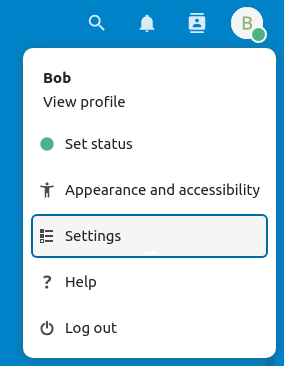
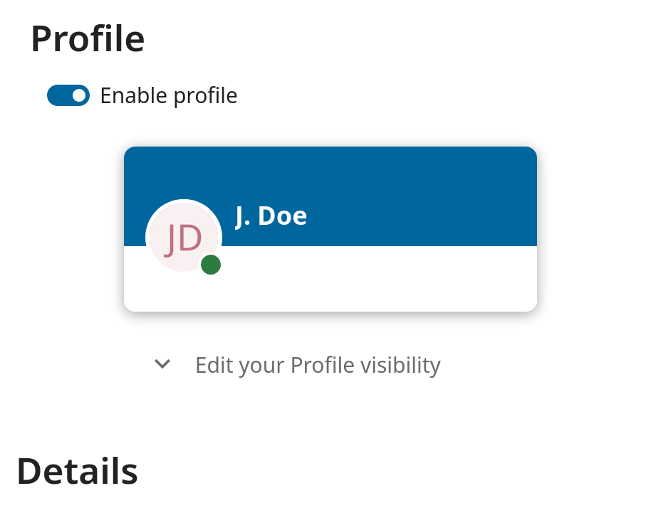

Click on your profile picture in the top right corner of your Nextcloud instance to open the menu

Clicking on Settings from the drop down menu opens the user preferences
Poznámka
If you are an administrator, you can also manage users and administer
the server. These links do not appear to a non-administrator user.
The options listed in the Personal Settings Page depend on the applications that
are enabled by the administrator. Some of the features you will see
include the following:
Usage and available quota
Manage your profile picture
Full name (You can make this anything you want, as it is separate from your
Nextcloud login name, which is unique and cannot be changed)
Available options and settings depending on your administrator’s configuration.
If you are not able to change the password or the display name in your personal settings,
please contact your administrator for help.
Some administrators decide to share their global address book with other Nextcloud instances (so called Trusted Servers) or even with the wider world.
This is helpful when two instances want to work closely together, or when people want to use Nextcloud as a virtual telephone book for others to browse.
It also allows searching for contacts, creating shares and much more.
You can change what personal data of yours is shared by setting the scope of your data. Clicking on the lock icon will open the following dropdown
next to each entry:
If you set your data to Private, nobody but you will be able to see it.
If you set your data to Local, all logged in users within your Nextcloud instance will be able to see the information, but no one outside of it.
If you set your data to Federated, the trusted server(s) which are added by your administrator will be able to see this data, in addition to all logged in users.
If you set your data to Published, anyone can see your data. For some use cases this is wanted.
Someone with a public facing role such as marketing or sales might want to share their contact with a wide variety of connections which might not be using Nextcloud.
If the profile is enabled by your administrator, then your profile data can be read by other users and guest.
To control who can see which information you can adjust the scopes already mentioned:
Private will only allow you and users you have added to your phone book to see the data
Local and above will also allow guests to see your data
To restrict the visibility even more you can disable guest from seeing your profile data by changing the profile visibility to logged-in users.
On the personal settings you can find the button for profile visibility:

Which allows to configure the visibility for each profile attribute: